Proyectos Contract & Retail
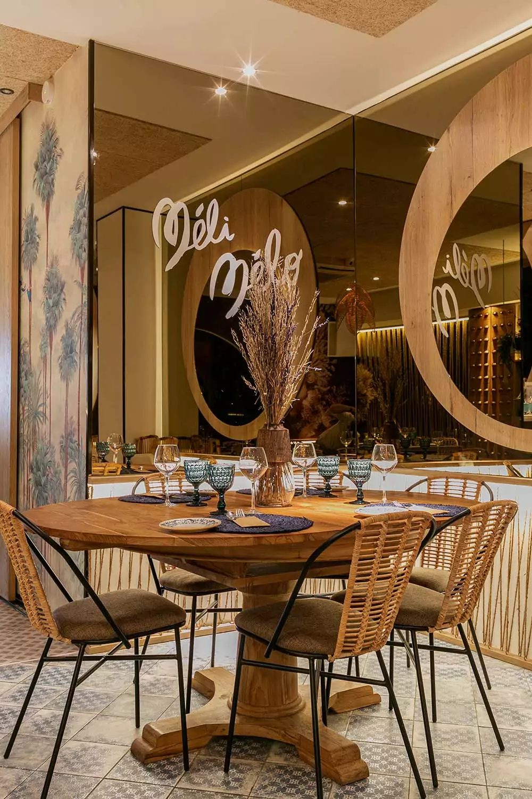Descubriendo un decorado de restaurante sensacional… Meli Melo.
Hay locales emblemáticos que merecen rejuvenecer sin perder su esencia. Meli Melo lleva 17 años agasajando al pueblo aragonés con sus tapas tradicionales y creativas. Hoy, estrena nueva imagen con un decorado de restaurante sensacional. Frescura, color, elegancia… Un interiorismo espectacular con los muebles más sofisticados de Francisco Segarra.
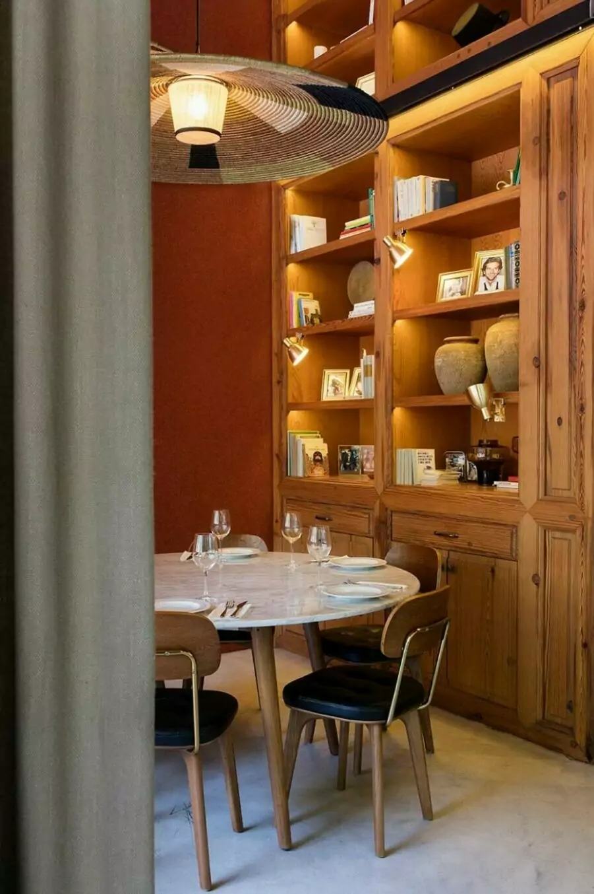Cuando la elegancia se funde con el diseño y la decoración de restaurantes… Bar Galán.
Hay decoraciones y diseños que convierten un espacio en momento, haciendo de cada detalle una experiencia. Dando un nuevo giro al espacio, y potenciando un estilo que rezuma elegancia, Bar Galán es el nuevo restaurante en la Ciudad Condal donde será fácil dejarse seducir y donde sentirse arropados desde el primer instante.
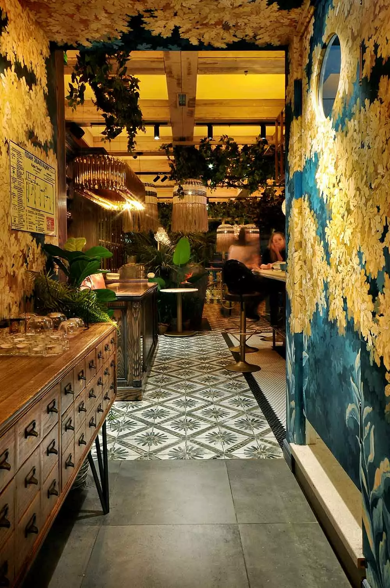Palosanto. Un restaurante mediterráneo con la exquisitez del diseño 100%FS.
El Mediterráneo siempre será una maravillosa fuente de inspiración para un concepto de decoración. Palosanto es naturaleza, es armonía y es elegancia. Pero, sobre todo, es un restaurante chispeante donde Francisco Segarra nos sumerge de lleno en la belleza única de Europa meridional. Descubre nuestro último proyecto 100%Fs.
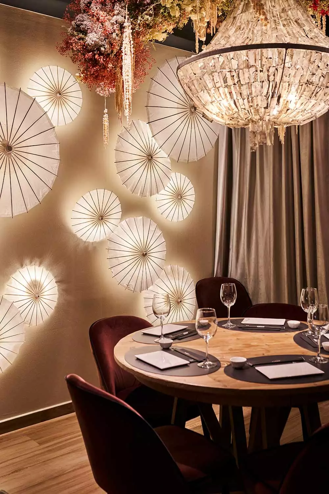BELKA. Una decoración ecléctica, singular, sorprendente y única.
Los amantes de la decoración y del interiorismo sabemos que no es fácil una combinación de estilos que resulte realmente armoniosa, pero está claro que los límites están en nuestra imaginación... Descubre en Belka un diseño de restaurante tan tremendamente atractivo y especial que te envolverá con encanto y te olvidarás del mundo exterior.
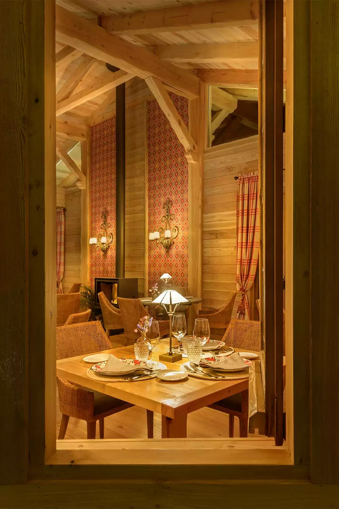ASOKO. Interiorismo y decoración de restaurante 100%FS también en Valencia.
Un excelente trabajo de interiorismo y decoración consigue plasmar en este espacio el maravilloso torbellino de sensaciones que nos producen lugares tan fascinantes como un anticuario. Descubre cada espacio, cada rincón y cada detalle de este proyecto 100%FS y déjate atrapar por la singularidad de su estilo oriental.
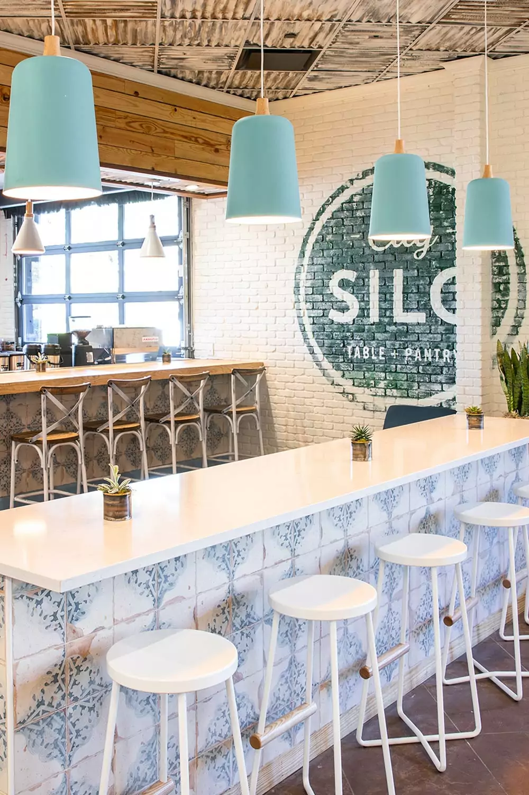Ofelia Home&Decor y un diseño de tiendas que enamora…
En su particular revolución del interiorismo retail, Francisco Segarra sigue sorprendiéndonos con el diseño de tiendas únicas y entrañables. Ofelia Home&Decor. Nuestra marca de decoración y menaje para el hogar tiene nueva casa en la ciudad de Benicasim. Descúbrela y reafirma tu personalidad con el encanto de la belleza imperfecta y la esencia de un concepto bello y personal.
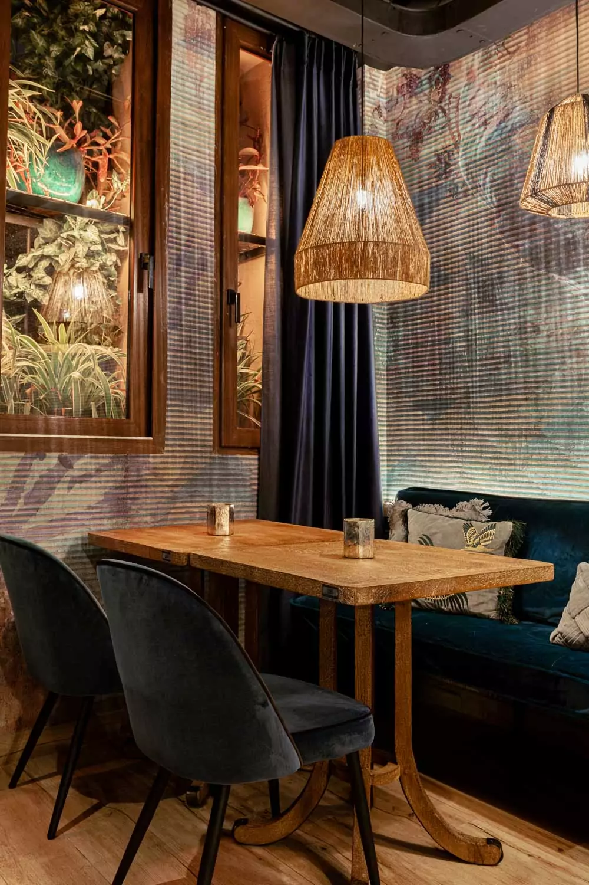O Prego da Peixaria. Decorar un restaurante con pasión y mucha alegría…
Siguiendo las huellas de nuestros muebles, viajamos hasta Lisboa para perdernos en su cultura más fresca y desenfadada. O Prego da Peixaria. Un concepto de hostelería que nos enseña cómo decorar un restaurante tradicional conectando a la vez con enfoques más modernos. Platos de fusión, interior rústico y una fulgurante terraza para disfrutar de una experiencia maravillosa.
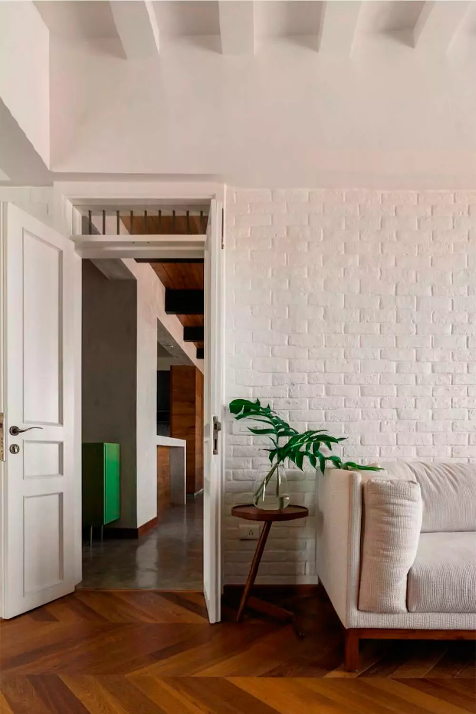Hotel Viñas de Lárrede… Una decoración hotelera entrañable y brillante.
¡Celebremos el amor, la amistad, la vida! Con su brillante decoración hotelera, el hotel Viñas de Lárrede rebosa felicidad. Ven a celebrar tus mejores eventos en la Casita del Jardín. Al abrigo de los Pirineos, este lugar idílico promete momentos de pura magia. Ambiente íntimo, decoración natural y muebles para hoteles genuinos y sumamente atractivos… ¡Descúbrelo!
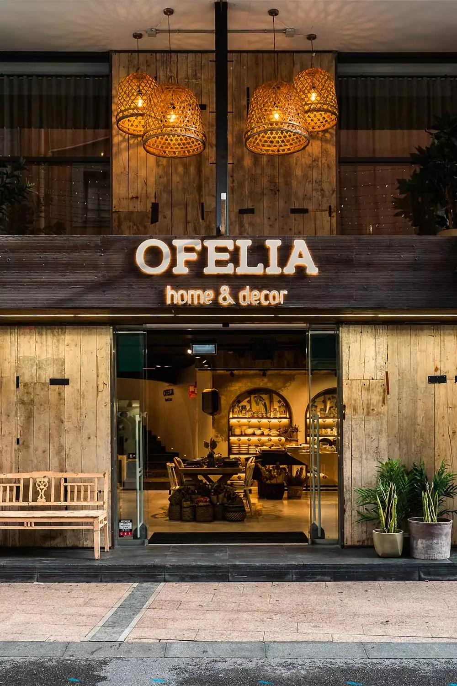City Silo Table and Pantry. Una decoración de restaurante reconfortante.
La colección de pavimentos y revestimientos de estética vintage más auténtica del momento se embarca en un largo viaje cruzando el océano con el fin de poetizar una decoración de restaurante discreta, pero con gran valor decorativo. ¿Por qué? Porque a veces simplemente hay que proponérselo…
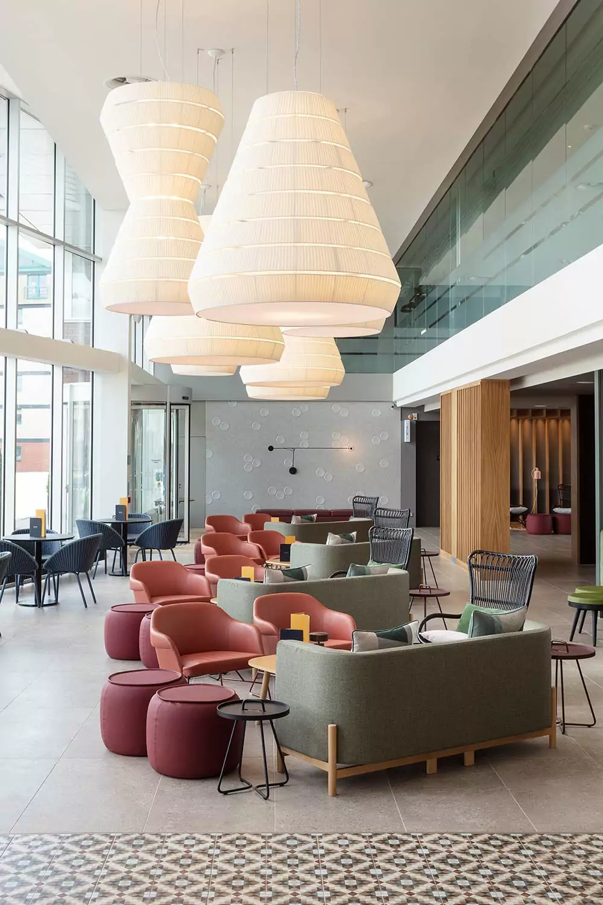Asoko. Interiorismo en restaurantes elegantes, modernos y dinámicos.
¿Te apetece vivir una experiencia japonesa con cierto aire vintage? Decídete y ven a sumergirte en un espacio de estilo oriental que combina la elegancia, la originalidad y el dinamismo a través de un interiorismo cautivador fruto de un trabajo 100% FS. Descubre un diseño de restaurante con una personalidad ya consolidada.
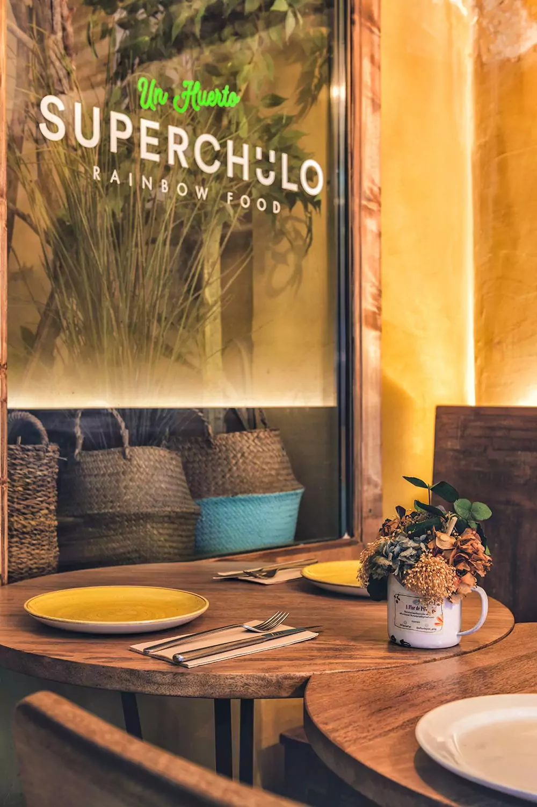Figarilla. Una decoración de restaurante con alma y desparpajo.
Los diseños vintage de la colección de Francisco Segarra aportan la fuerza de sus rasgos a esta decoración de restaurante. Un proyecto de diseño donde la creatividad y la innovación consiguen traernos el alma de sur y la esencia de las tradicionales tabernas andaluzas. Una combinación que se engrandece con cada detalle.
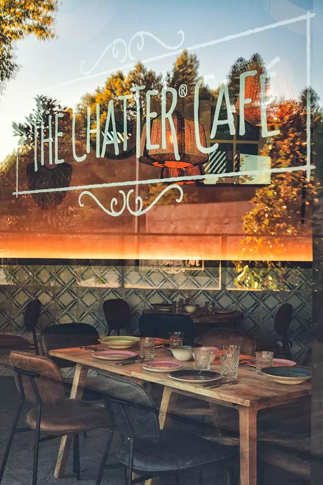Decoración wabi-sabi y un paisaje envolvente. La mejor escapada para conectar con uno mismo.
Buscando un refugio de paz, donde encontrar la serenidad y empezar a tejer los propios pensamientos… Así empieza un proyecto de diseño donde la colección FS by Peronda pasa a formar parte de la decoración wabi-sabi. Un apartamento en Talegaon que se abre al exterior y crea de sus imperfecciones una belleza más auténtica y pura.
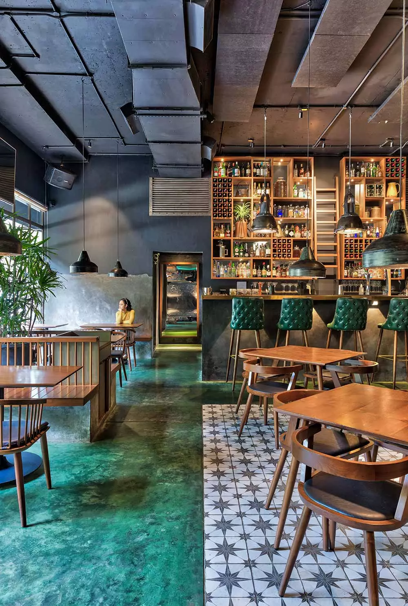Apex City Quay & Spa. Interiorismo hotelero a la vanguardia.
El lujo, la elegancia, el confort y la afabilidad se unen en un interiorismo que hace de este hotel ubicado en Dundee el destino perfecto para una escapada urbana. Espacios renovados, atractivos y sumamente cálidos donde tiene cabida la colección de pavimentos y revestimientos de Francisco Segarra. Bienvenidos a Apex City Quay & Spa.
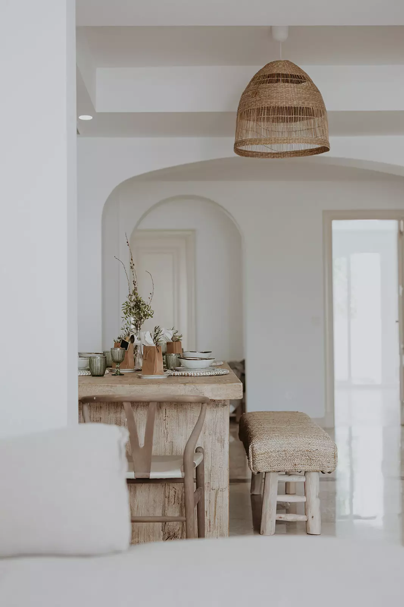Montebello Hills. Apartamentos de lujo con un diseño utópico e irresistible.
Una suave brisa, un paisaje evocador, una decoración utópica… Montebello Hills es un pequeño paraíso marbellí para vivir plácidamente. Apartamentos de lujo con un diseño sembrado de profundos sentimientos donde el mobiliario de Francisco Segarra y Ofelia Home&Decor alcanza su máxima belleza. Atrévete a soñar…
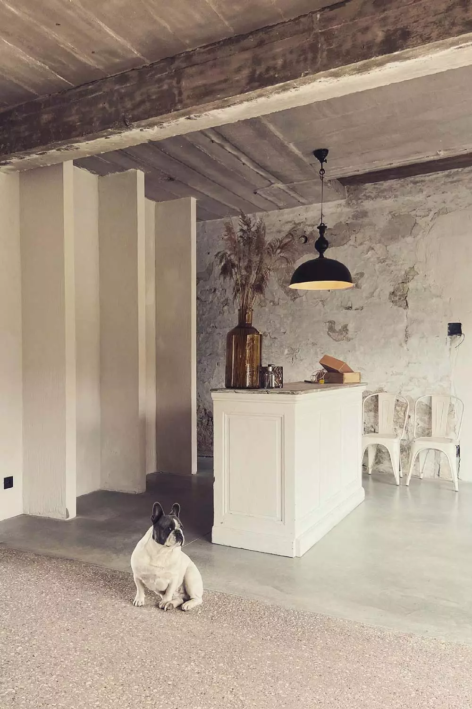BBruT. The Hidden Place. Un hotel rural B&B con una decoración vintage exclusiva.
Descubre los placeres de la tendencia Bed and Breakfast en esta antigua granja convertida en un hotel rural de encanto en medio de los pólderes al norte de Bélgica. Con una decoración vintage sutil e íntima, ese proyecto esconde mucho más que un bonito lugar… BBruT. The Hidden Place.
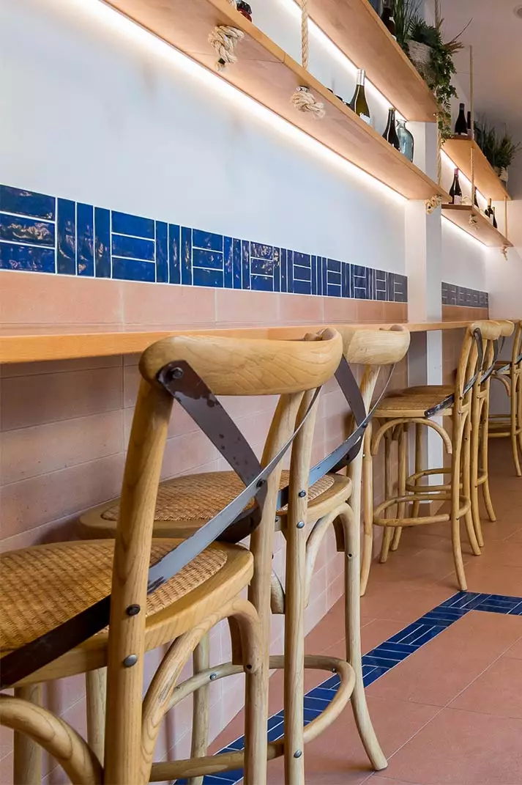Diseño de interiores en lugares con encanto.
La belleza y la atemporalidad de los cerámicos de Francisco Segarra viajan hasta la Sierra de Tramuntana para redondear un proyecto residencial en el municipio de Fornalutx. Un lugar con encanto para un interiorismo dinámico y profundo. Un admirable proyecto residencial que hoy nos abre sus puertas y nos invita a soñar.
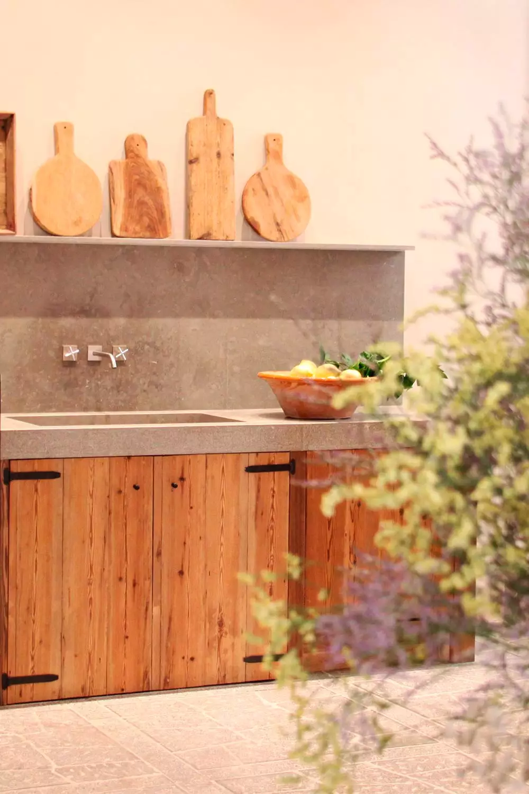Malakaña… Sabores y colores del sur en un novedoso concepto de tasca.
¿Nos vamos de tapeo? Malakaña es un novedoso concepto de tascas que nos trae lo mejor del sur en la localidad valenciana de Benicàssim. Una fusión de dos culturas marcada por los colores, los materiales y unos taburetes altos que desprenden mucha chispa… Descubre un proyecto de interiorismo realizado con origen, alma y emoción.
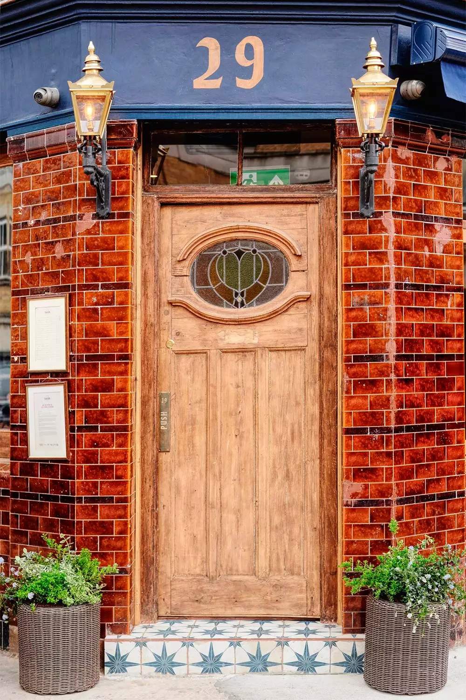Maya. Espectáculo y decoración en un concepto de restaurante inédito.
Placer gastronómico y descubrimiento cultural… Mucho más que un restaurante, Maya celebra la vida a través de un concepto sensacional. Cocina de fusión, show diners y una decoración que genera sueños. ¡Que empiece el espectáculo! Atrévete a vivir una aventura única y descubre un maravilloso proyecto donde la esencia de Francisco Segarra queda sutilmente plasmada.